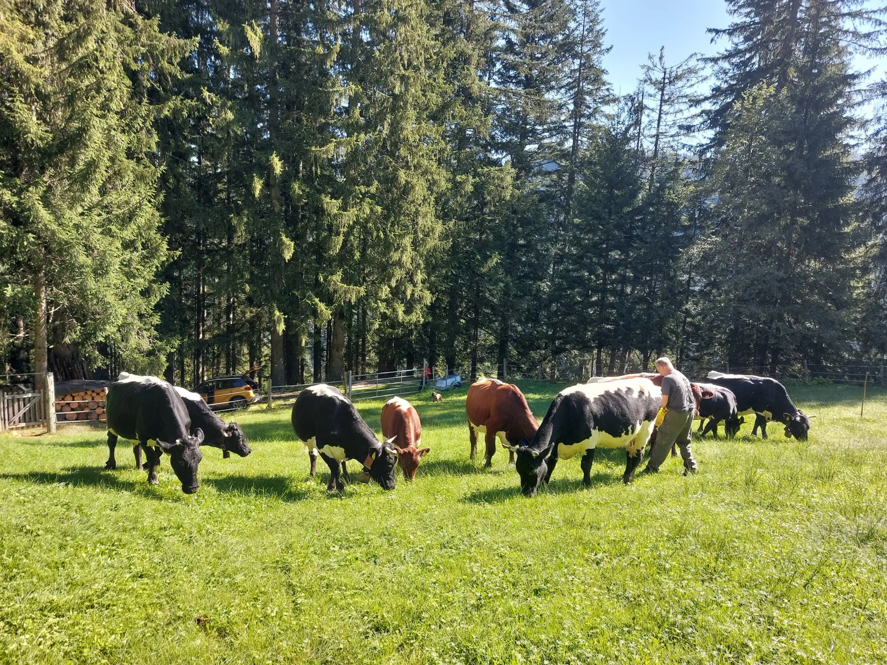
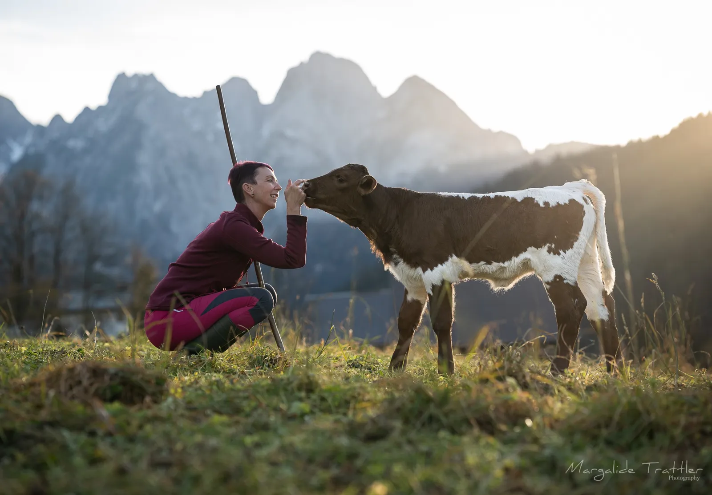
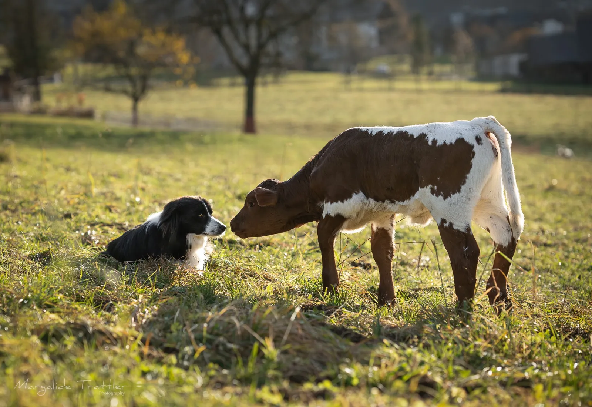
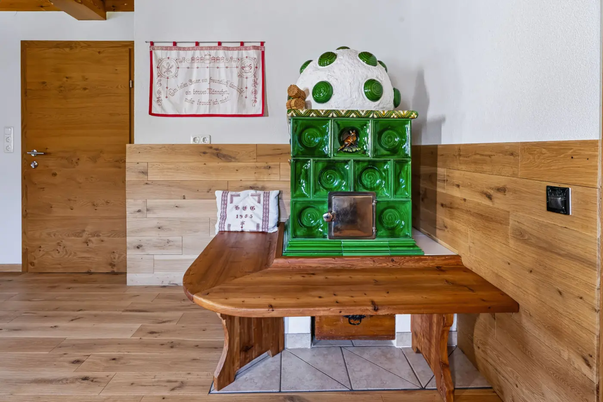
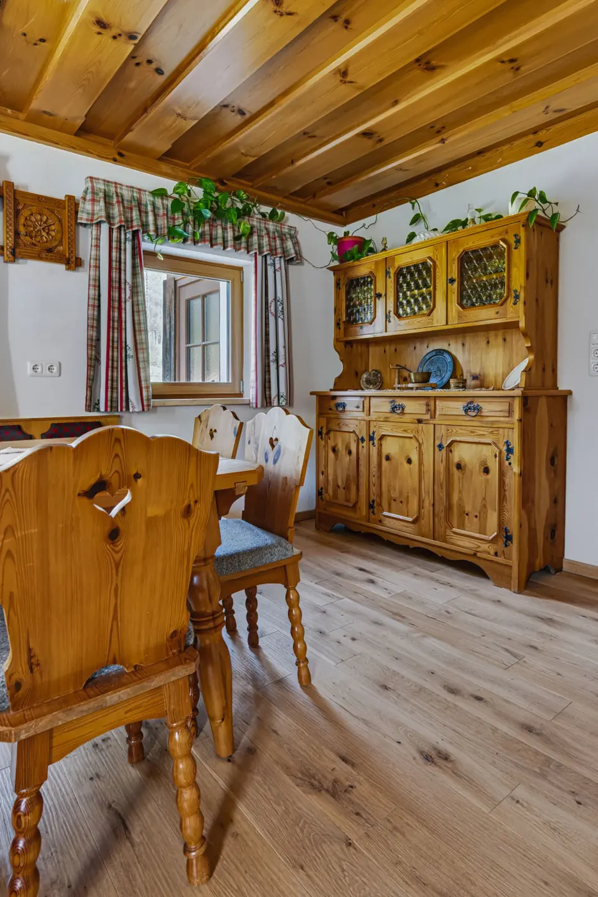
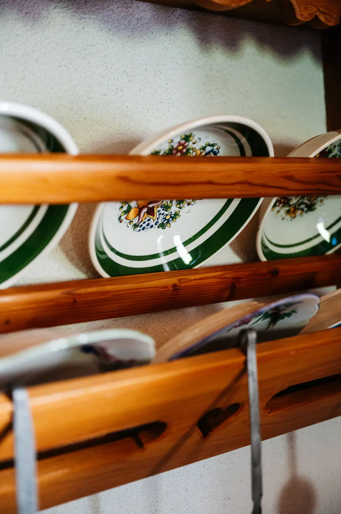
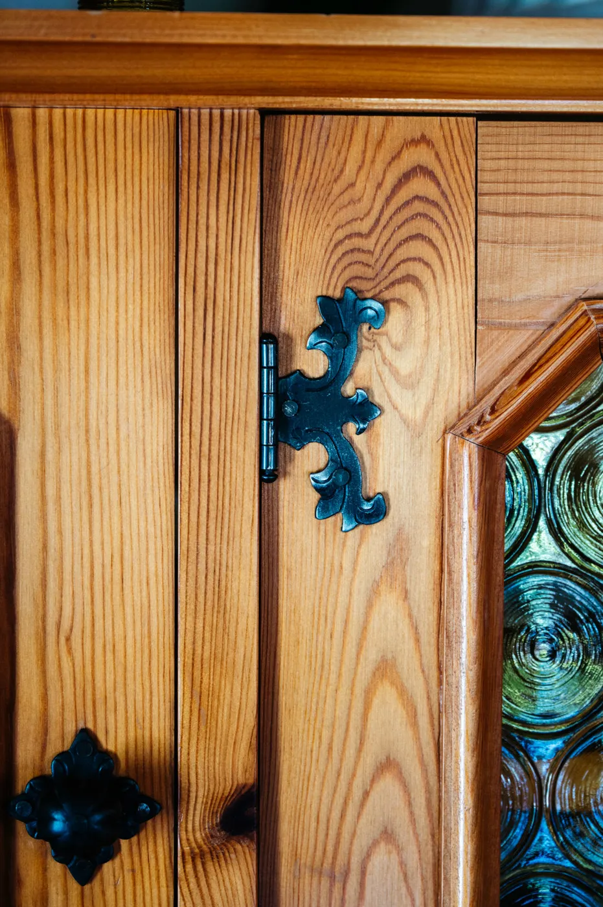

70 m² · bis 5 Personen
70 m² · bis 5 PersonenFerienwohnung LöckerseeMit zubuchbarer Bauernstube
- 1–5 Personen
- 70 m²
ab € 180pro Nacht für 4 Personen, zzgl. Endreinigung € 75 und Ortstaxe
AnsehenAlmromantik › Schmiedsipplhof
Urlaub am Bauernhof · Gosau
Ferienhof im Gosauer Mittertal mit Blick auf den Gosaukamm, Tieren, Zirbensauna und Platz für die ganze Familie.
Unsere Ferienwohnungen
70 m² · bis 5 Personenab € 180pro Nacht für 4 Personen, zzgl. Endreinigung € 75 und Ortstaxe
Ansehen 80 m² · bis 5 Personen
80 m² · bis 5 Personenab € 190pro Nacht für 4 Personen, zzgl. Endreinigung € 85 und Ortstaxe
Ansehen 200 m² · bis 15 Personen
200 m² · bis 15 Personenab € 260pro Nacht für 5 Personen, zzgl. Endreinigung bis € 200, je nach Zimmerbelegung und Ortstaxe
AnsehenInklusive
Unsere Sauna haben wir selbst aus Zirbenholz gebaut. Daneben warten der überdachte Ruhebereich mit Holzbänken und das Kneippbecken zum Abkühlen, draußen die Terrasse mit Liegestühlen und Blick auf den Gosaukamm. Einfach einschalten und genießen, für unsere Gäste ohne Aufpreis.


Hofleben
5 Mutterkühe mit Jungvieh, Pferd Bella, die Esel Emma und Marie, Mini-Shetlandponys, Walliser Schwarznasenschafe, Laufenten, Katzen und Hofhund Sky. Zum Streicheln und Füttern gehst du am besten mit uns mit, sag einfach kurz Bescheid.
5 Mutterkühe mit Jungvieh
Seit 2015 sind wir ein Mutterkuhbetrieb: Unsere fünf Pinzgauer Kühe ziehen ihre Kälber selbst groß. Im Sommer verbringen sie die Zeit auf der Alm, ganz in der Nähe unserer Almhütte. Wer dort Urlaub macht, hat sie als Nachbarn.





Unser Paint Horse
Bella ist unser Paint Horse, gut zu erkennen an der weißen Mähnensträhne. Mit ihrem Fohlen ist sie der Liebling vieler Gäste.


Mit Nachwuchs
Emma und Marie sind die heimlichen Stars am Hof. Sie lassen sich gern streicheln und haben Nachwuchs bekommen.


Mini-Shetlandponys
Klein, wuschelig und neugierig: Unsere Mini-Shetlandponys sind perfekt für die kleinsten Gäste.

Walliser Schwarznasen
Mit ihren schwarzen Gesichtern und dem dichten Fell sehen sie aus wie Kuscheltiere.


Hofhund, Laufenten und Katzen
Sky, unser Hofhund, begrüßt jeden Gast. Dazu kommen unsere Laufenten am Brunnen und die Hofkatzen.


Zubuchbar zu Löckersee und Hehnanest
Kachelofen, großer Holztisch, bemalte Kästen: In unserer Bauernstube feiert ihr Geburtstage, Familientreffen oder einfach einen langen Abend. Buchbar zusammen mit der Ferienwohnung Löckersee oder dem Hehnanest.
€ 80 pro Aufenthalt






Deine Gastgeber
Wir leben in Gosau, und der Schmiedsipplhof ist seit Generationen in unserer Familie. Heike ist deine Gastgeberin am Hof und auf der Alm, Martin hat als Tischlermeister alle unsere Unterkünfte selbst geplant, gebaut und eingerichtet. Wir freuen uns auf dich.


Geprüfter Urlaub-am-Bauernhof-Betrieb mit 4 Blumen. 2024 und 2025 mit 5 von 5 Punkten ausgezeichnet.
Das sagen unsere Gäste
Echte Gästebewertungen über Urlaub am Bauernhof (TrustYou), Stand Oktober 2026. Alle Bewertungen ansehen
„Wir haben uns rundum wohl gefühlt bei euch in Gosau […] Eine sehr schöne Wohnung mit viel Platz […]“
„Ein wunderbarer Aufenthalt in der Almheu-Wohnung mit unseren drei Kindern und unserem Hund […] Ein fantastischer Ort für einen Familienurlaub, wir kommen sehr gerne wieder.“
„Ruhiger Hof mit herrlichem Blick auf die Berge. Super ausgestattet, falls man selbst kochen möchte. Sehr sauber, sehr freundliche Gastgeberin. Tolle Sauna.“
Ja. Bitte melde dein Haustier bei der Buchung an, es kostet € 8 pro Tier und Nacht. In die Schlafzimmer und auf die Betten dürfen Haustiere nicht. Wenn wir nachweisen können, dass dein Tier dort war, verrechnen wir eine Sonderreinigung von € 100. Bitte lass es nicht in den Wiesen sein Geschäft machen, dort machen wir das Heu für unsere Tiere.
Ja. Die Zirbensauna mit Kneippbecken ist für unsere Gäste ohne Aufpreis nutzbar.
Schauen und fotografieren jederzeit, bitte aber nur von außen: nicht in den Stall und nicht auf die Weide, unsere Mutterkühe schützen ihre Kälber. Zum Streicheln und Füttern sag uns kurz Bescheid, dann gehen wir gemeinsam hin und du lernst alle mit Namen kennen.
Zum Hornspitzlift der Skiregion Dachstein West gehst du 7 bis 10 Minuten. Die Langlaufloipe beginnt direkt vor der Hoftür.
Ja. Wir haben eigene Säfte, Fruchtaufstriche und Kräuter. Frag bei der Anreise einfach nach, was gerade da ist.
Bitte nicht. Wir mähen die Wiesen zweimal im Jahr und machen daraus das Heu, von dem unsere Tiere im Winter leben. Zum Spielen gibt es den Spielplatz, den Garten und die Liegewiese, wir zeigen dir alles gerne.
Ja, ein Griller steht dir zur Verfügung. Die Mülltonnen findest du rechts neben dem Haus, bitte trenn den Müll, auch eine Biotonne ist da.
Ja. Ab 3 Nächten bekommst du die SalzkammergutCard gratis, mit bis zu 25 % Ermäßigung bei Bergbahnen, Höhlen, Schifffahrt, Museen und mehr. Die Unterlagen dafür liegen bei uns am Hof auf.
Die Nächtigungsabgabe der Gemeinde Gosau und gegebenenfalls die Endreinigung. Den genauen Gesamtpreis siehst du bei der Online-Buchung, bevor du fix buchst.
Freie Termine sehen, Preis berechnen und sofort fix buchen. Ohne Anfrage, ohne Warten.
Unsere Online-Buchung wird gerade eingerichtet. Bis dahin buchst du telefonisch oder per E-Mail.
Fragen? Tel. +43 664 11 44 926
info@almromantik.at